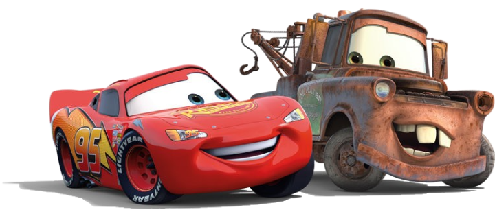
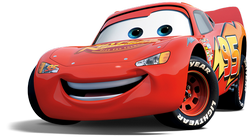
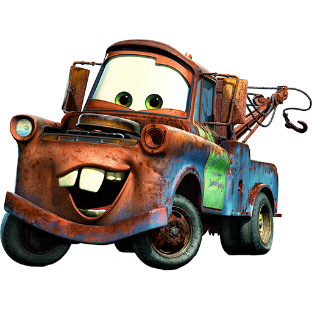
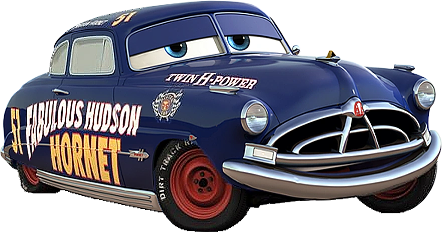
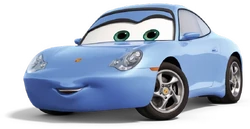
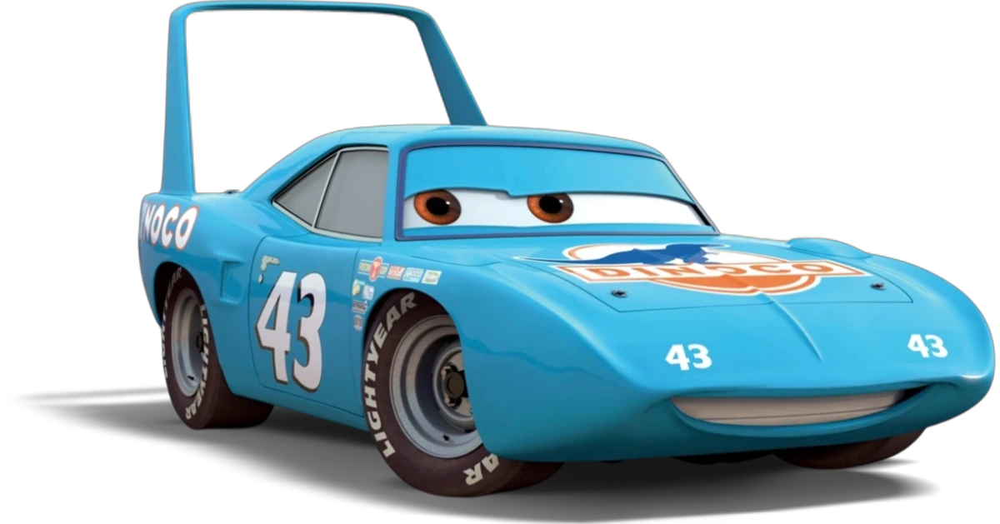
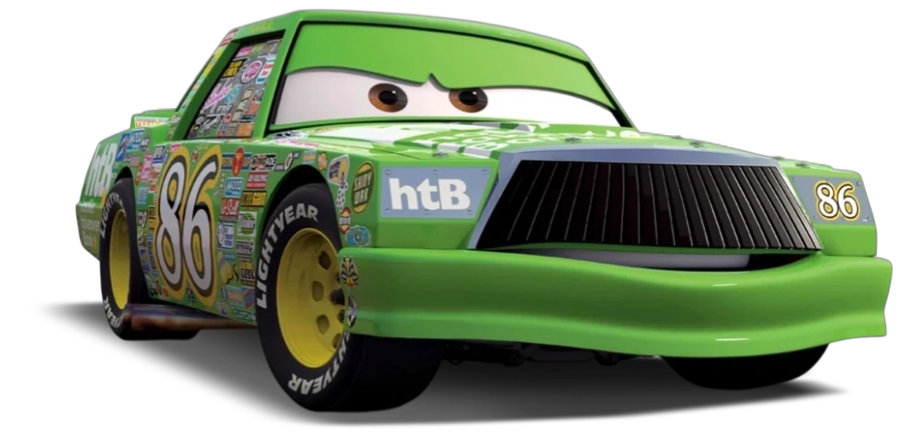

Personagens do filme de Carros

Confira a página dedicada aos principais personagens do filme Carros e descubra mais sobre suas histórias, personalidades e momentos marcantes ao longo da aventura.
Relampago Mcqueen

Relâmpago McQueen é um carro de corrida talentoso, veloz e muito determinado. No início de sua jornada, ele é bastante focado em vencer e alcançar a fama, mas sua passagem por Radiator Springs faz com que descubra o verdadeiro valor da amizade, da humildade e de aproveitar o caminho.
Tom Mater

Mate é o melhor amigo de Relâmpago McQueen e um dos personagens mais divertidos da franquia. Simpático, espontâneo e sempre disposto a ajudar, ele conquista todos com seu jeito engraçado e sua lealdade. Apesar de parecer simples, Mate demonstra que a verdadeira amizade não depende de velocidade ou fama.
Doc Hudson

Doc Hudson é um respeitado médico e juiz de Radiator Springs que guarda uma grande história como piloto. Conhecido como o Fabuloso Hudson Hornet, ele se torna um importante mentor para McQueen, ensinando que experiência, disciplina e respeito são tão importantes quanto talento.
Sally Carrera

Sally Carrera é uma Porsche inteligente, carismática e independente. Ela vive em Radiator Springs e ajuda McQueen a enxergar a cidade e seus moradores de uma maneira diferente. Sally também é uma grande amiga e uma das personagens que mais contribuem para a mudança de McQueen.
The King

O Rei é um lendário carro de corrida e um dos pilotos mais experientes da Copa Pistão. Conhecido por sua habilidade e espírito esportivo, ele representa a importância da experiência, do respeito e da competição saudável dentro das pistas.
Chick Hicks

Chick Hicks é um dos principais rivais de Relâmpago McQueen. Ambicioso e extremamente competitivo, ele está disposto a fazer de tudo para conseguir a vitória. Sua personalidade contrasta com a de McQueen e ajuda a mostrar diferentes atitudes diante da competição.